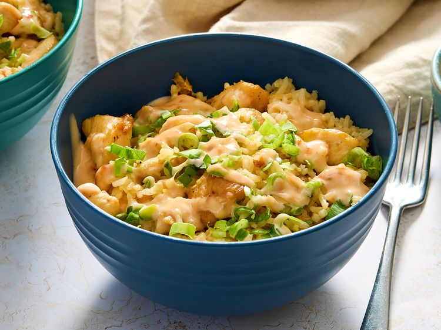
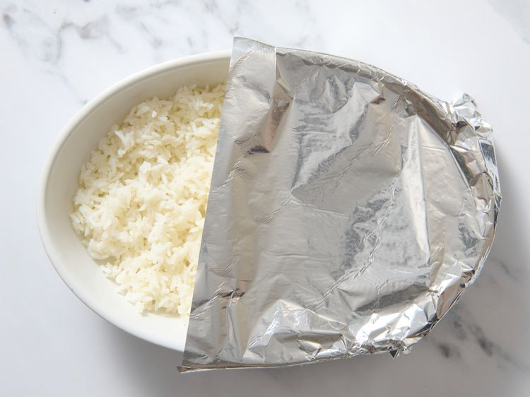
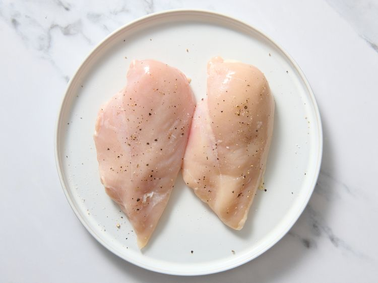
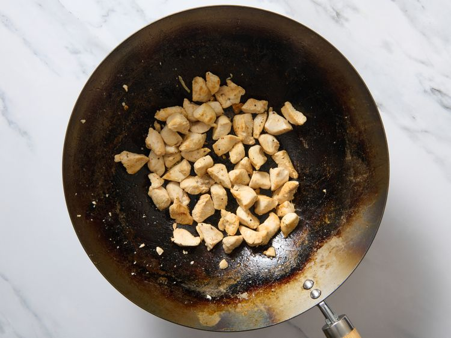
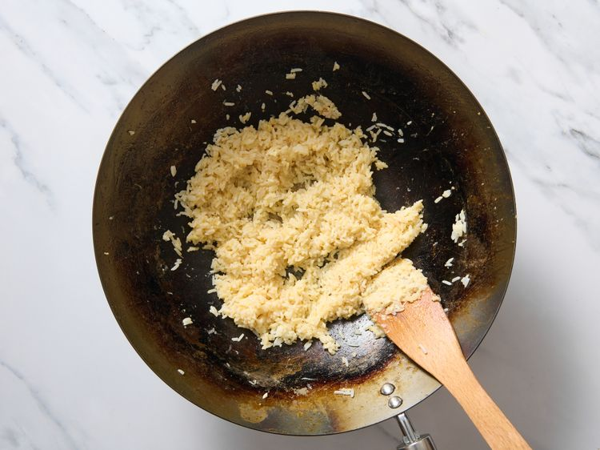
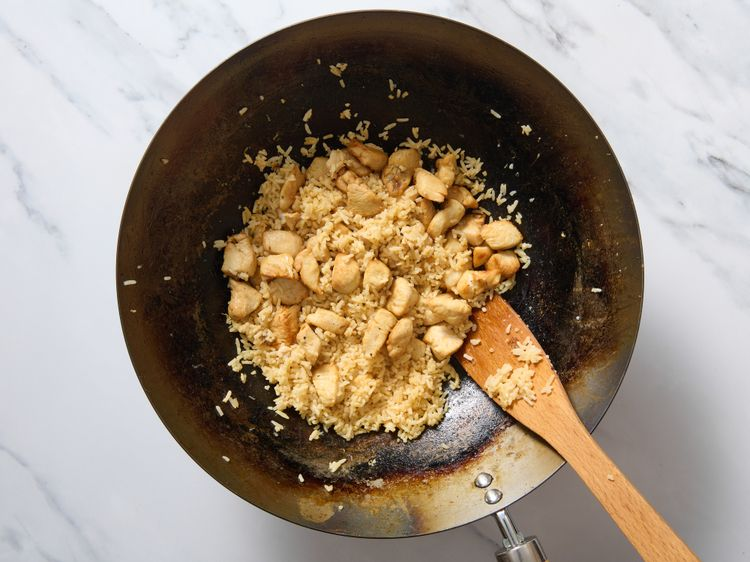
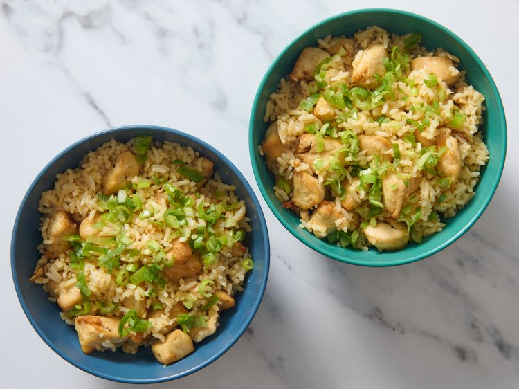
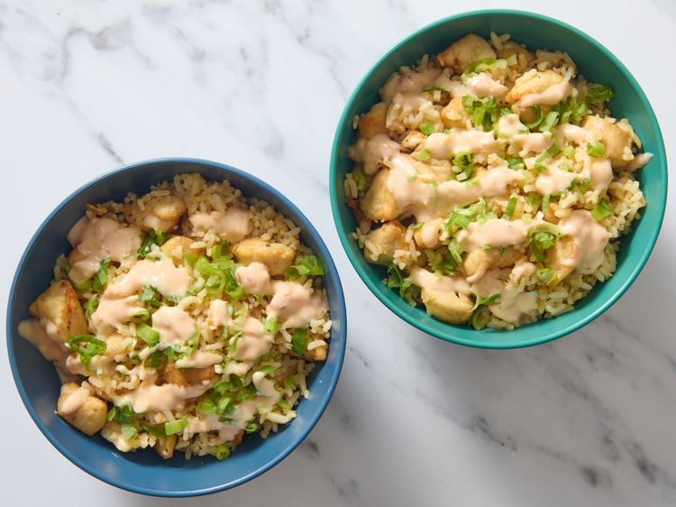

This bang bang chicken fried rice recipe offers a a basic method for preparing rice and chicken for the dish, but you can also use leftovers if you like, and add any vegetables you'd like. The spicy bang bang sauce takes it over the top.
Bring water to a boil in a saucepan and lightly season with salt. Add rice, reduce heat to low, and cover. Cook until tender, about 20 minutes. Remove from heat and allow to cool. Fluff rice with a fork; spread evenly into a casserole dish. Cover with foil and refrigerate to dry out rice for 5 hours or up to overnight.
Place chicken breasts on a plate and season with salt and pepper; cover and refrigerate for 2 to 3 hours.
Cut chicken into bite-sized chunks. Heat oil in a wok or large skillet over medium heat. Add chicken and cook, stirring frequently, until chicken is browned and no longer pink at the center, about 5 minutes. Remove from wok and set aside.
Add additional oil to the wok at medium heat. Add rice; cook and stir for about 1 minute. Add garlic and ginger; cook and stir for 1 minute more, then stir in egg and cook until egg is opaque, about 2 minutes.
Lower heat to medium-low, then return chicken to the wok. Stir to warm all the way through, then add in the soy sauce and sesame oil. Stir and taste, add more of either to your liking.
Remove from heat and scoop into bowls. Top with green onions.
For sauce, stir mayonnaise, sweet chili sauce, and hot sauce together in a bowl. Drizzle over chicken rice bowls before serving.
